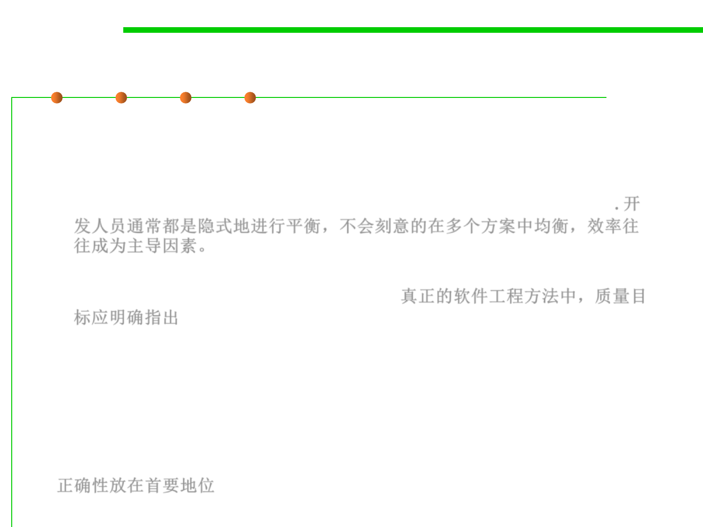

1.2 Quality Objectives of Software Construction
Tradeoff between quality properties
▪ Developers need to make tradeoffs.
– Too often, developers make these tradeoffs implicitly, without taking the
time to examine the issues involved and the various choices available;
efficiency tends to be the dominating factor in such silent decisions. 开
发人员通常都是隐式地进行平衡，不会刻意的在多个方案中均衡，效率往
往成为主导因素。
– A true software engineering approach implies an effort to state the criteria
clearly and make the choices consciously. 真正的软件工程方法中，质量目
标应明确指出
▪ Necessary as tradeoffs between quality factors may be, one factor
stands out from the rest: correctness.
– There is never any justification for compromising correctness for the sake
of other concerns such as efficiency.
– If the software does not perform its function, the rest is useless.
正确性放在首要地位